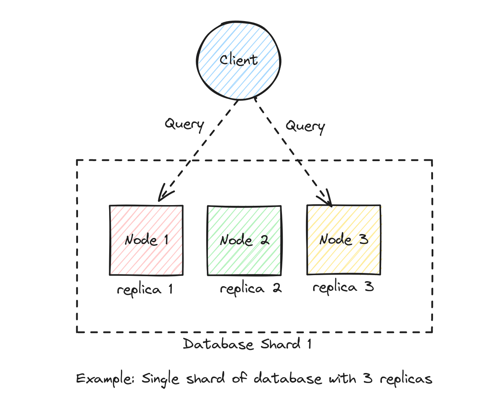
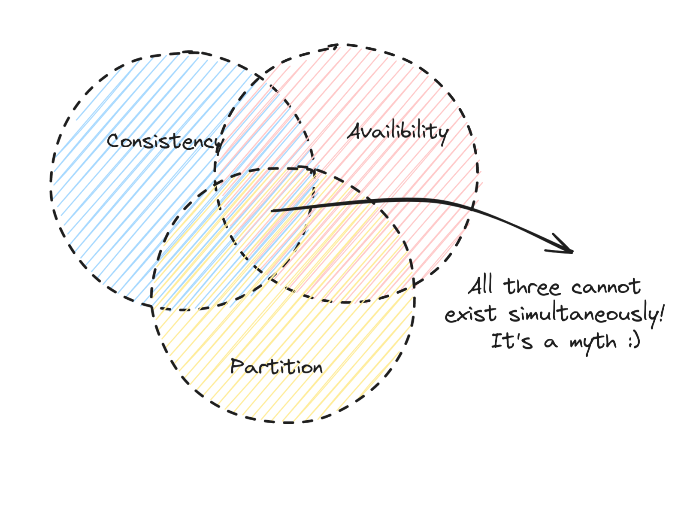

What is CAP theorem?
CAP theorem is one of the fundamental principles in distributed systems that's important to understand. In this post, let's learn more about the CAP theorem and understand how this theorem is applicable to real world distributed systems.
CAP
CAP stands for Consistency, Availability and Partition Tolerance.
To better understand each of these terms, let's assume that:
- We have a simple system of servers consisting of 3 nodes,
node1,node2andnode3. - Each of these nodes are replicas of a database shard
replica1,replica2andreplica3. - Each of these replicas contain exactly the same set of data.
- A client can connect to any of these replicas and query data.
- A client can connect to any of these replicas and insert data.
- Data inserted into one replica will be replicated to the other replicas.
- There's a drift if the data in any one of the replicas is different from the others.
A node, a replica, a host or a server all mean the same for the purposes of this example:

Consistency
The property of consistency guarantees that all the nodes return the exact same results regardless of which node the clients query.
Availability
The property of availability guarantees that the clients querying are guaranteed a result even if one or more nodes in the system fail (even if the results are inconsistent).
Partition Tolerance
Partition tolerance refers to the durability of distributed systems. In case of an event like a network partition, the distributed system continues to operate without any downtime.
Understanding CAP theorem
The CAP theorem generally states the following:
In a distributed system, it's impossible to guarantee all the three properties of Consistency(C), Availability(A) and Partition tolerance(P) simultaneously.

Since network partitions are realistic and are unavoidable in real world distributed systems, in case of a network partition, we should optimize for one of the following:
- AP - The system is highly available(A) during a network partition(P), sacrificing consistency(C).
- CP - The system is highly consistent(C) during a network partition(P), sacrificing availability(A).
AP and CP
In our example above, if a client writes to replica 1, then the data would be replicated automatically to the other two replicas.
Let's imagine that there's a network partition that causes replica 1 to go offline just after the client finishes writing the data, but before it can be fully replicated to the other two replicas. In this scenario, there will be a data rift or in other words, the data would be inconsistent between the nodes.
Available and Partition Tolerant - AP
If we design a system that's highly available, then we can ensure that replicas 2 and 3 are always up and return a result to a query even if the results might stale due the rift. We will hope that when replica 1 comes online, the other two replicas will become eventually consistent.
Consistent and Partition Tolerant - CP
On the other hand, if we were to design a system that is highly consistent, we need to pick consistency over availability. In this scenario, even if the replicas 2 and 3 are online, since the data is not consistent amongst the replicas, we won't return any results until both the replicas have caught up with replica 1.
In realworld distributed systems, there are some systems that optimize for availability and there are others that optimize for consistency. A few examples that prioritize availability are:
- Cassandra
- DynamoDB
On the other hand, some examples of distributed systems that prioritize consistency are:
- ETCD
- HBase
So, that basically wraps our post on CAP theorem. I hope that this post helped you understand what CAP theorem is and how it can be leveraged to design a distributed systems with tradeoffs to either consistency or availability.